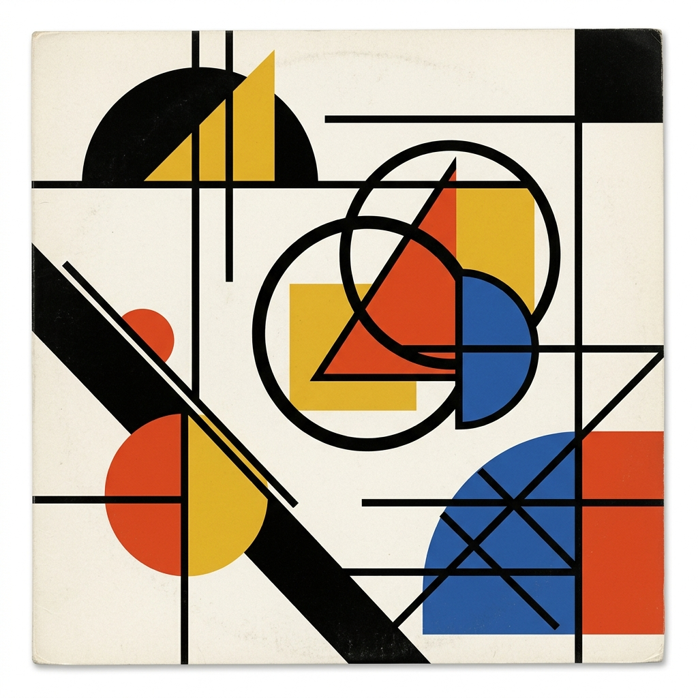

词
歌词时间线
LYRIC TIMELINE
撤销
重做
教程
导入 JSON
保存 JSON
导出 PNG
LIVE CANVAS
实时预览
已保存
⛶
NOW PLAYING
TRACK 01

未命名专辑
歌曲名
歌手名
‹
›
00:00
/
03:40
LYRIC CHRONOLOGY
歌词时间线
0 LINES
LISTENER PROFILE
ACCOUNT 01
@listener
未署名听众
CURATED PLAYLIST
夜航收藏
0 TRACKS
预览
编辑
导出
退出专注预览